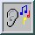

Adding Tempo
Page 4 from the Prime Listening Guide
[ Previous Page | Next Page | Make your own prime music ]
So far we have taken advantage of the pitch of our notes, but not their length. We played all of our primes as quarter notes. Look for a minute at the beginning of the sequence of positive integers. Here I have made the primes red, the composites black, and the unit 1 blue:
1 2 3 4 5 6 7 8 9 10 11 12 13 14 15 16 17 18 19 20 21 22 23 24 25 26 27 28 ...
We see each prime is followed by a different length "gap" of composites. 2 is followed by none, 3 by one, 5 by one, 7 by three... We will use these gaps to assign lengths to the prime notes--the bigger the gap, the longer the note. It turns out that for the primes up to n, the average gap length is log n (natural logarithm). (This is an immediate consequence of the prime number theorem.) So let's play the prime p with a length proportional to the length of the gap after p plus one, divided by the log of p (that is, the length of the note assigned to the nth prime pn is a constant times (pn+1-pn)/log pn).
| Click the button on the right to hear the first 300 primes modulo 41 in this manner. (Played on "Pad 6 (metallic).") |  |
| Here are the first 300 primes after 1,000,000 played in the same way (modulo 41, with note lengths proportional to the gaps, played on acoustic grand). |